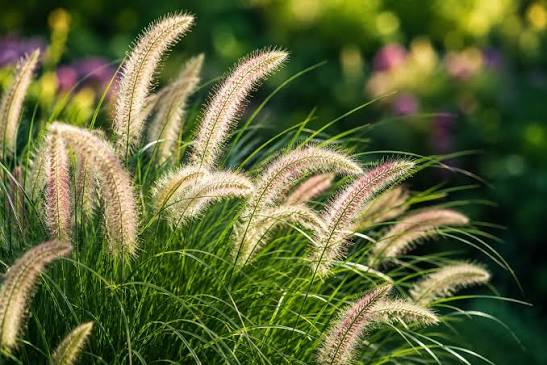
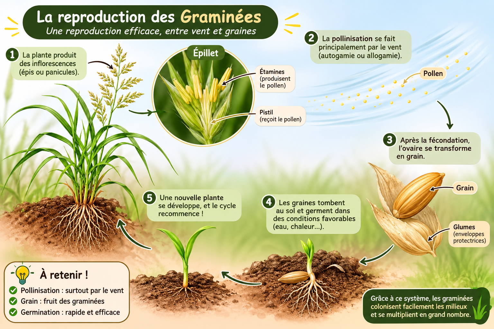
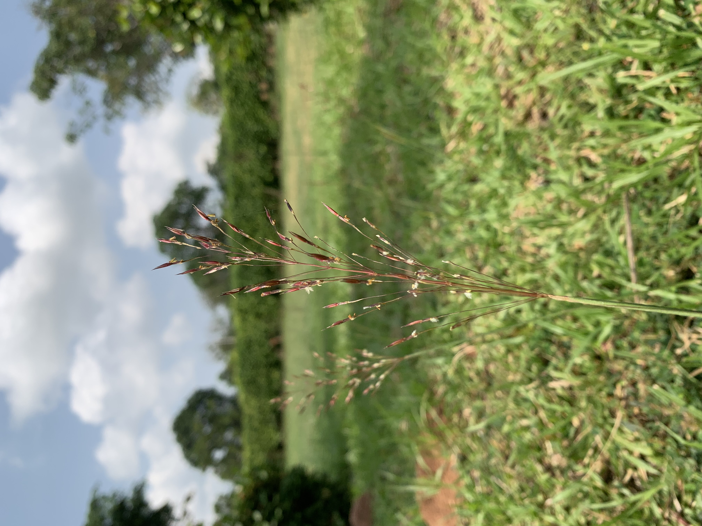

Problème résolu-évolution:
Se reproduire vite et efficacement grâce à la fleur et au vent.
Se reproduire vite et efficacement grâce à la fleur et au vent.
Ce sont des plantes à fleurs, mais avec des fleurs très simples, adaptées au vent. Le pollen est léger et transporté loin par le vent. Elles poussent très vite, ce qui leur permet de coloniser rapidement les savanes et les champs.

Graminés
Fleur, fruit,pollinisation par le vent>

